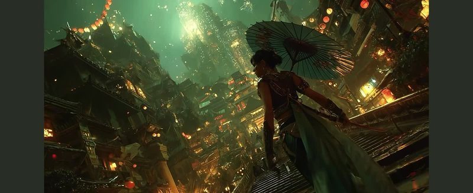
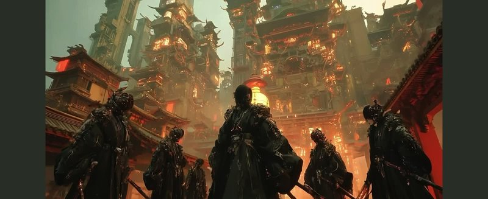
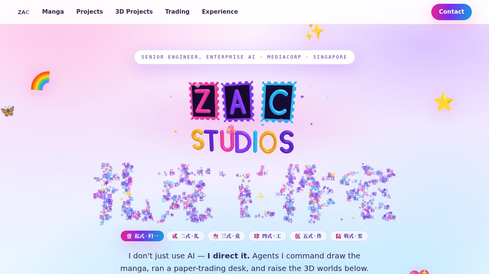
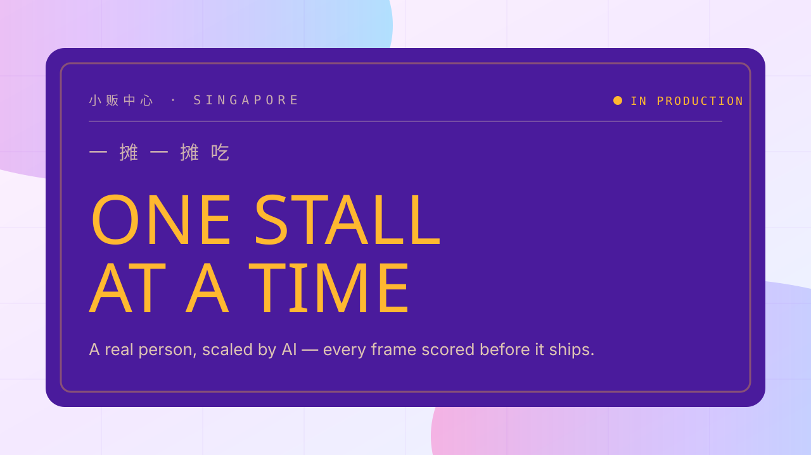
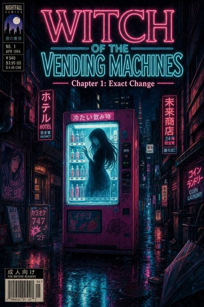

This page shows work the AI produced for this site that was thrown out, next to what replaced it, with the direction that changed it. Every entry is taken from the repository's git history: the dates, the wording of each direction and the session links are quoted from the commits themselves, and nothing here is paraphrased into a quote or estimated after the fact. The per-frame identity-gate scores for the virtual influencer were not kept, so no entry below carries a score. From here on, rejects are recorded as they happen in the schema at the bottom of the page.
kill removed outright
constraint a number or a rule changed
send-back returned to be done properly
rework replaced with a different approach
01
The Ink & Lantern theme
25–26 Jul 2026kill
Rejected


The hero stills of the dark theme — assets/film/still-city.jpg, still-gate.jpg, still-vanguard.jpg as committed in 07740b5 (1600×654, shown at 800px). They fronted three scroll-scrubbed film bands on a jade-and-gold landing page.
Kept

The landing hero as it ships now — 1280×720 capture of the front page, 7 Sep 2026.
The landing page went bright; the subpages were still three different dark brands (Ink & Lantern, neon-noir, gold-noir).
— killed the next day:d07703eReskin every subpage to the candy-neon theme, 26 Jul 2026 · session
02
The influencer page, with placeholders in it
28 Jul – 2 Aug 2026send-backrework
Rejected

assets/thumbs/influencer.svg — the card thumbnail of the hawker-food concept, committed with the page in e2f8011. The page behind it shipped with empty media slots and [RATE] where prices should be.
Kept
assets/thumbs/influencer.jpg — the card the landing page ships now, for the campaign-portfolio page that replaced the concept.
Direction
Media are placeholder slots, each labelled with the aspect ratio it expects, and the hero carries a status note saying so. Prices in the brands section are still [RATE].
— e2f8011Add the virtual influencer section, 28 Jul 2026
Say 'On request' rather than a bare placeholder on the rate card
— sent back the same morning: commit subject, 90f6380, 28 Jul 2026
— then reworked: commit subject, 6aac562, 2 Aug 2026
None of these three commits carries a Claude-Session trailer, so there is no session link.
03
The cursor-tracked card glow
8 Aug 2026kill
Rejected
What 1a5d9c6 deleted from fow/index.html — 1 file changed, 25 deletions(-). Only the removed lines are shown; the indented .card::before line sat inside the reduced-motion media query, which stayed:
Twice. First the button handed the scroll to the browser and the whole assembly went past in about a second. Then the 75-second playback that replaced it.
The one-line change in campus/campus.js, dfbf736:
-const PLAY_SECONDS = 75; // start to finish, at a constant pace+const PLAY_SECONDS = 38; // start to finish, at a constant pace
Kept
A 38-second sweep driven on a rAF loop, with the same trapezoidal speed profile and every cancel path unchanged.
"Play the build" handed the whole five-viewport span to the browser's own smooth scroll, which crosses it in about a second: the parts blurred past before a single one could be seen landing.
— 4a5a321Play the build slowly — a real 75-second playback, not a smooth-scroll jump, 26 Jul 2026 15:58 · session
75s read as slow rather than deliberate.
— six minutes later:dfbf736Halve the build playback to 38 seconds, 26 Jul 2026 16:04 · session
05
The flip-book export with nine pages
27 Jul 2026send-back
Rejected
Not on disk. The nine downscaled, recompressed pages were dropped before the book was committed, so they are not in the history — c8e61b3 is the only record of them.
Kept

comic/page01.jpg (1024×1536, shown at 400px) — the first of the twelve real pages the book now reads directly.
Direction
It carried 9 pages; the chapter has 12. Comparing hashes and dimensions, its pages are the repo's own page01-09 downscaled to 1000x1500 and recompressed to ~68% of their size — so the book was also lower quality than what comic/ already served. It now reads comic/page01-12.jpg directly: the real resolution, no duplicated JPEGs, and 3.05 MB of bundled art dropped.
— c8e61b3Turn chapter 1 into a page-turning book; unify the back-links, 27 Jul 2026 · session
06
Lucky Bunny as a self-extracting bundle
27 Jul 2026constraint
Rejected
Not on disk. The 1.84 MB bundle was unpacked before anything was committed; the history holds only the real files that came out of it.
Kept
Real files — lucky-bunny/index.html, game.html, app.js and a vendored React — 246 KB on disk, with fonts fetched through the same Google Fonts link every other page uses.
The export was a 1.84 MB self-extracting bundle: React, the runtime and ~180 woff2 subsets all base64'd into one file that mints blob URLs at load. That is a fine way to hand someone a page and a poor way to serve one, so it is now real files — 246 KB on disk, and the 1.1 MB of inlined font subsets became a Google Fonts <link> that fetches only the latin cuts, which is what every other page here already does.
— d33feb1Add Lucky Bunny Fortunes, and bring the typing game into the light, 27 Jul 2026 · session
07
The nav pill that ate SENTINEL-9's play button
28 Jul 2026send-back
Rejected
The header as it was in mech/index.html, and what c341c3b did to it:
- .nav-wrap{position:fixed;top:16px;left:0;right:0;z-index:9;display:flex;justify-content:center;padding:0 20px}+ .nav-wrap{position:fixed;top:16px;left:0;right:0;z-index:9;display:flex;justify-content:center;
+ padding:0 20px;pointer-events:none} /* the bar spans the page; only the pill takes clicks */
+ .nav{pointer-events:auto}
The bug was not found by reading. It was found by a gate that clicks the button the way a visitor would, without forcing the click through.
Kept
The header passes pointer events through; only the pill takes clicks. PLAY ASSEMBLY sits above the nav layer and, under 900px, drops to the bottom-right corner where the pill cannot reach it.
The nav pill I added to the mech page sits in a full-width fixed header at z-index 9. The header is invisible but it still spans the whole top of the page, so it sat directly over the PLAY ASSEMBLY button (top-right, z-index 6) and ate every click on it. The button was fine; nothing could reach it.
— c341c3bStop the nav bar swallowing clicks on SENTINEL-9's play button, 28 Jul 2026 · session
Verified with real (un-forced) clicks at 1280 and 375: the button starts the assembly, the label flips to STOP, the scroll animates through the phases, a second click halts it, and the nav links stay hittable.
— same commit, the verification paragraph
08
This week's audit
6–7 Sep 2026killconstraintreworksend-back
Rejected
A pulsing Live dot on the landing page over a paper-trading desk that had stopped on 17 Jul 2026 — 51 days earlier.
Full-resolution manga chapter pages, 2.3 MB of them, used as 400-pixel thumbnails.
The influencer card still describing the hawker-food pipeline from entry 02, a page that no longer existed.
Unrendered template placeholders left in <img src> and <path d>, so the browser fetched them as URLs and got a 404 twice per load.
index.html: the trading desk is a paper-trading snapshot of 17 Jul 2026 and is now labelled that way (no pulsing 'live' dot); the influencer card describes the page that actually ships (campaign portfolio, not the earlier hawker-food pipeline)
— 124571fSite-wide head pass, honest copy, fow logo fix, README, 7 Sep 2026 · session
index.html: the seven manga cards used full-resolution chapter pages (2.3 MB) as ~400px thumbs; real 800px thumbnails now live in assets/thumbs/ (originals untouched). Landing bytes 3.2 MB -> 1.7 MB desktop, 2.8 MB -> 0.8 MB mobile
— a056d05Landing, trading, influencer: real thumbnails, phone-safe hero, nav fixes, 6 Sep 2026 · session
comic/flip.html: {{ sheet.frontSrc }} / backSrc were parsed as literal <img src> before hydration (2x 404 per load); bind via sc-camel-src and warm only the current sheet ±2 instead of all 12 pages up front